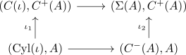
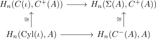
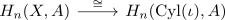
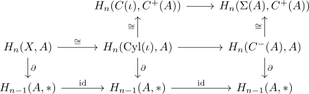

homology of a pair of spaces and factorization through suspension
Proposition
Let $(X,A)$ be a pair of spaces and $n \in \mathbb{Z}$. Then there exists a factorization
where $\Sigma$ is the suspension and $H_n(-,-)$ the relative singular homology functor
Proof
Consider the following commutative diagram of pairs of spaces

for the inclusion
and the collapse
Applying the relative singular homology functor results in

these are isomorphisms by excision theorem, as ???
By mapping cylinder of a subspace inclusion homotopy equivalent this results in the isomorphism

Therefore, we get the commutative square

Here the lower map is the long exact sequence of a pair of spaces (?)
then, as $C^+(A)$ is contractible, compatible with $C(\iota), \Sigma(A)$, it follows that since the suspension isomorphism of singular homology is given by
\begin{displaymath}
\begin{tikzcd}
H_n(\Sigma(A) , *) \arrow[]{d}{\cong} \arrow[bend left=70]{ddd}{\cong} \\
H_n(\Sigma(A), C^+(A)) \arrow[]{d}{\congd} \\
H_n(C^{-}(A), A) \arrow[]{d}{\partial}\\
H_{n-1}(A,*)
\end{tikzcd}
\end{displaymath}This gives then a factorization
\begin{displaymath}
\begin{tikzcd}
& & H_{n(\Sigma(A), *) \arrow[]{d}{\cong} \\
& H_{n}(C(\iota),C^+(A)) \arrow[]{d}{\cong} \arrow[]{r}{} & H_n(\Sigma(A), C^+(A)) \arrow[]{d}{} \\
H_n(X,A) \arrow[swap]{rrd}{\partial} \arrow[]{r}{\cong} & H_{n}(\mathrm{Cyl}(\iota), A) & H_n(C^n(A), A) \arrow[]{d}{\partial}\\
& & H_{n-1}(A,*)
\end{tikzcd}
\end{displaymath}